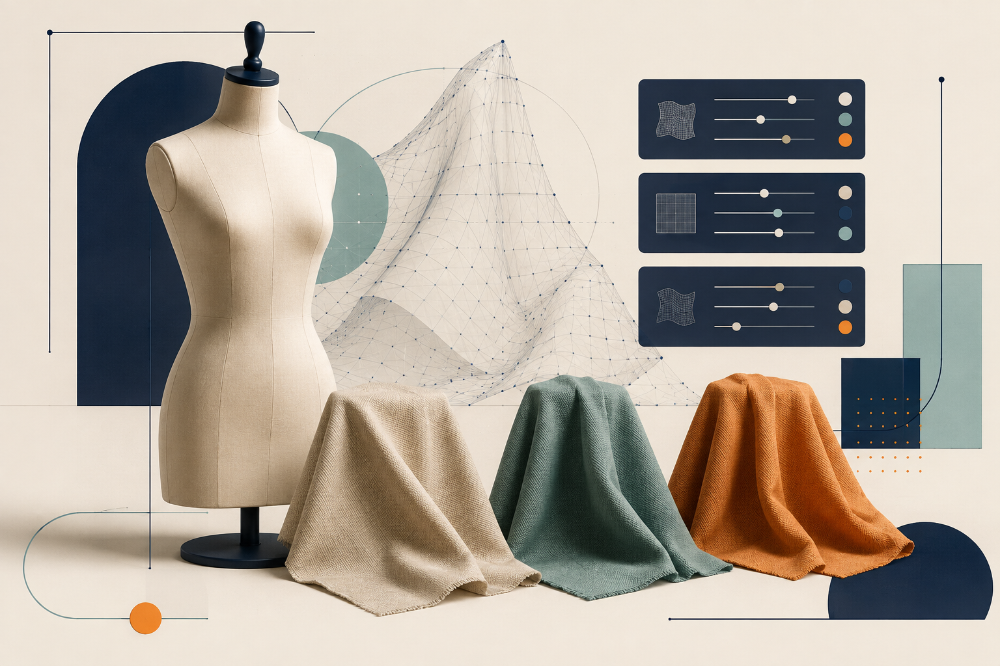
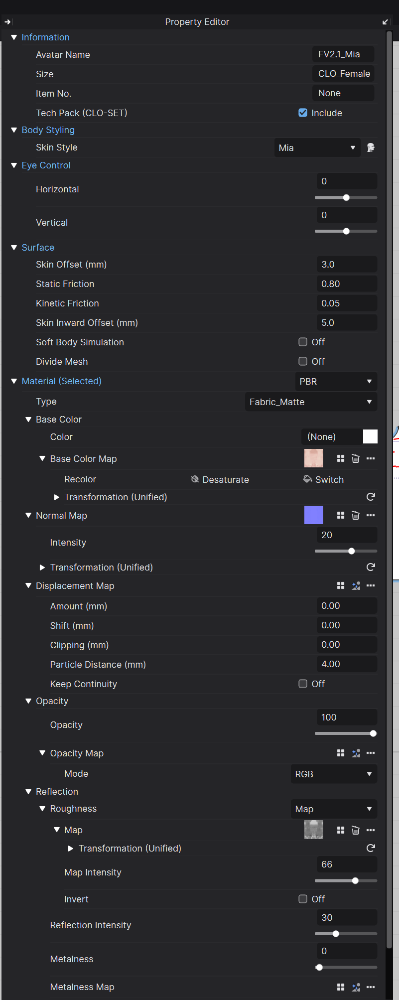
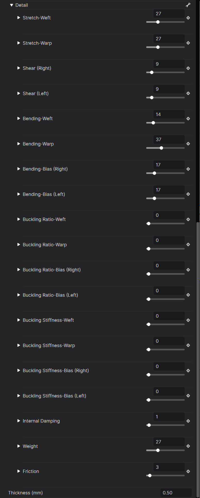
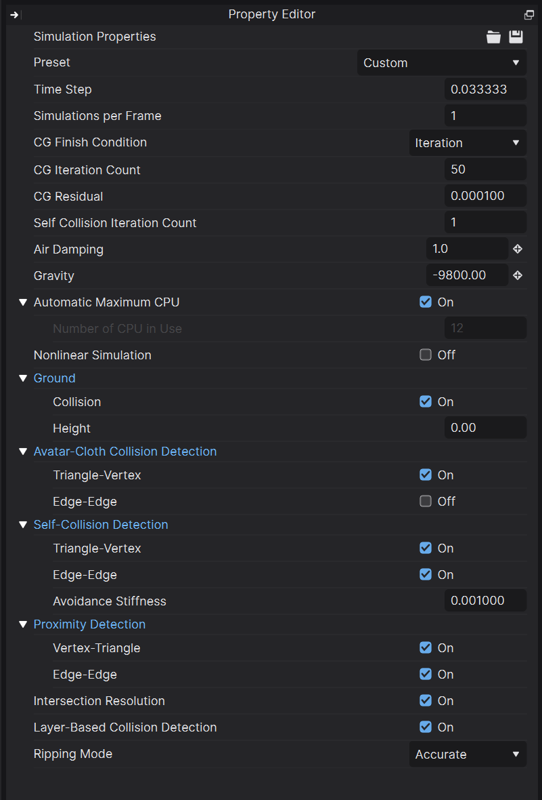

CLO 2026 속성 사전: 아바타·원단 물성·시뮬레이션
2026.09.07
CLO 2026.1의 Avatar Property, Fabric Physical Property, Simulation Properties를 실제 화면과 함께 항목별로 풀이한 속성 사전입니다. 값의 의미뿐 아니라 올리거나 내렸을 때의 변화, 초보자가 건드려도 되는 순서와 주의점을 함께 설명합니다.
이 글은 특정 과제를 따라 만드는 작업 순서가 아니라, CLO에서 자주 만나는 세 종류의 Property Editor를 찾아보는 기능 사전입니다. 확인 화면은 CLO 2026.1.224 (r58461)입니다. 세 패널의 역할은 먼저 분리해서 기억하세요. Avatar Property는 몸과 의상이 만나는 조건, Fabric Physical Property는 천 자체가 늘고 접히고 흔들리는 성질, Simulation Properties는 그 천을 컴퓨터가 어떤 정확도와 충돌 규칙으로 계산할지를 정합니다. 비슷해 보이는 값이라도 역할이 다릅니다.
값을 바꾸기 전 원칙 • 한 번에 여러 값을 바꾸지 말고 한 항목씩 비교합니다. • Fabric은 가장 가까운 Preset을 복제한 뒤 수정합니다. • 시뮬레이션이 폭발하거나 관통한다고 바로 원단 물성부터 바꾸지 않습니다. 봉제 방향, 3D 초기 배치, 패턴이 몸 안에 들어갔는지, Particle Distance와 충돌 간격을 먼저 봅니다. • 슬라이더 숫자는 실제 물성 단위 그 자체가 아니라 사용하기 쉽게 매핑된 값이 포함됩니다. 펼침 화살표가 있는 항목은 상세 상수나 실제 단위를 확인할 수 있습니다.
1. Avatar Property — 몸과 의상이 만나는 조건

여는 법: 3D 창에서 Select/Move 도구로 아바타의 피부를 클릭합니다. 의상이나 머리카락을 잡으면 다른 속성이 나오므로, 오른쪽 패널 맨 위가 Avatar 정보인지 확인하세요.
Information·Body Styling·Eye Control
• Avatar Name: 프로젝트 안에서 표시할 아바타 이름입니다. 물리 계산에는 직접 영향을 주지 않습니다. • Size: 현재 아바타의 체형·사이즈 계열을 표시합니다. CLO 기본 아바타인지, 변형된 사이즈인지 구분할 때 봅니다. • Item No.: 품번이나 관리 번호를 기록하는 메타데이터입니다. • Tech Pack (CLO-SET) · Include: CLO-SET 테크팩으로 보낼 때 이 아바타 정보를 포함할지 정합니다. 화면에서 아바타를 숨기는 옵션이 아닙니다. • Skin Style: 기본 아바타의 피부 외형 프리셋을 바꿉니다. 체형이나 충돌 메쉬를 바꾸는 기능과는 다릅니다. • Eye Control · Horizontal / Vertical: 지원되는 CLO 아바타의 눈동자 시선을 좌우·상하로 조절합니다. 의상 시뮬레이션에는 영향을 주지 않습니다.
Surface — 핏과 충돌에 직접 영향을 주는 핵심
• Skin Offset (mm): 아바타 표면과 의상 사이에 두는 바깥쪽 충돌 여유입니다. 기본값 3 mm는 안정적인 계산을 위한 보이지 않는 간격입니다. 낮추면 밀착복이 몸에 가까워지지만, 너무 낮추면 관통과 떨림이 늘고 시뮬레이션이 느려질 수 있습니다. • Static Friction: 천이 피부 위에서 멈춰 있을 때 미끄러지기 시작하기 어려운 정도입니다. 높이면 스트랩이나 후드가 자리를 더 잘 버티지만, 너무 높으면 핏을 정리할 때 천이 피부에 달라붙은 듯 움직이지 않습니다. • Kinetic Friction: 이미 움직이는 천이 피부 위를 계속 미끄러질 때 받는 저항입니다. 높이면 움직임 중 옷이 덜 흘러내리고, 낮추면 더 매끄럽게 미끄러집니다. Static은 출발, Kinetic은 움직이는 동안이라고 기억하면 쉽습니다. • Skin Inward Offset (mm): Soft Body가 눌릴 때 아바타 안쪽으로 허용할 충돌·변형 여유입니다. 일반적인 단단한 아바타 핏을 맞출 때 가장 먼저 조절할 값은 Skin Offset이고, 이 값은 Soft Body를 사용할 때 의미가 커집니다. • Soft Body Simulation: 아바타 피부가 완전히 단단한 충돌체가 아니라 압력에 따라 눌리고 되돌아오도록 계산합니다. 브라·코르셋·밀착복처럼 피부 눌림이 중요한 경우에 쓰며 계산량이 늘어납니다. 구멍, 자기 교차, 불량 메쉬가 있는 커스텀 아바타는 결과가 불안정할 수 있습니다. • Divide Mesh: 아바타 메쉬를 더 촘촘하게 나눠 Soft Body 변형을 부드럽게 만듭니다. 켜면 파일과 계산 부담이 커지므로 Soft Body 품질이 실제로 부족할 때 사용합니다.
옷이 몸에서 떠 보일 때는 Skin Offset 하나만 보지 마세요. 아바타 Skin Offset, 패턴의 Add’l Thickness - Collision, 원단 Physical Property의 Thickness가 함께 작동합니다. 반대로 렌더 두께만 줄이면 보이는 두께는 바뀌어도 충돌 간격 문제는 그대로일 수 있습니다.
Material (Selected) — 아바타가 보이는 방식
이 구역은 아바타 표면의 렌더 재질입니다. 천의 Stretch·Bending 같은 물성이나 충돌을 바꾸지 않습니다. • Material / Type: PBR 렌더 방식과 Fabric_Matte, Skin 등 재질 셰이더 유형을 고릅니다. 유형에 따라 아래에 보이는 세부 항목이 달라집니다. • Base Color · Color: 표면의 기본 색입니다. • Base Color Map: 피부색, 메이크업, 문신 같은 컬러 텍스처를 넣습니다. • Recolor: 텍스처의 색을 다시 조정합니다. • Desaturate: 컬러 정보를 줄여 회색조에 가깝게 만듭니다. • Switch: 적용 중인 맵이나 색상 상태를 전환해 비교할 때 사용합니다. • Transformation (Unified): 텍스처의 반복 크기, 위치, 회전 등을 묶어 조절합니다.
• Normal Map · Intensity: 실제 메쉬를 밀어내지 않고 빛 반응만 바꿔 미세 요철을 표현합니다. 강도가 지나치면 피부나 원단이 거칠고 플라스틱처럼 보일 수 있습니다. • Displacement Map · Amount: 맵의 밝기에 따라 실제 렌더 메쉬를 밀어내는 최대 높이입니다. Amount를 올리면 요철이 커집니다. • Shift: 디스플레이스먼트의 기준 높이를 위아래로 옮깁니다. 전체가 너무 부풀거나 파묻혀 보일 때 기준면을 맞춥니다. • Clipping: 지정 높이 아래의 디스플레이스먼트 메쉬를 잘라내 구멍이나 레이스 같은 효과를 냅니다. 단순 요철에는 보통 0을 유지합니다. • Particle Distance: 디스플레이스먼트용으로 새로 생성되는 메쉬의 촘촘함입니다. 낮을수록 디테일은 좋아지지만 메모리와 렌더 부담이 크게 늘어납니다. • Keep Continuity: 연결된 면 경계에서 디스플레이스먼트가 끊겨 보이지 않도록 이어 줍니다. 공식 설명상 용접된 OBJ에서 사용합니다. • Opacity / Opacity Map / Mode: 전체 투명도 또는 맵의 채널 해석 방식을 정합니다. 검정과 흰색의 어느 쪽이 투명한지는 맵과 Mode 설정을 함께 확인합니다. • Roughness: 표면 반사의 퍼짐 정도입니다. 낮을수록 매끈하고 선명하게 반짝이며, 높을수록 거칠고 무광에 가까워집니다. • Map Intensity / Invert: 러프니스 맵 영향량을 조절하거나 흑백 해석을 뒤집습니다. • Reflection Intensity: 표면 반사량을 조절합니다. Roughness와 함께 봐야 합니다. • Metalness / Metalness Map: 금속성 반응을 전체 또는 맵으로 지정합니다. 피부와 일반 원단은 보통 낮게 유지합니다. • Miscellaneous · Mesh Type / Element Count: 선택된 아바타 메쉬의 구조 정보입니다. 가져온 형식이나 선택 상태에 따라 읽기 전용으로 보일 수 있습니다.
2. Fabric Physical Property — 천이 움직이는 성질

여는 법: Object Browser의 Fabric 탭에서 원단을 선택하고, Property Editor의 Physical Property > Detail을 펼칩니다. 이 값들은 서로 영향을 주므로 원하는 성질과 가장 가까운 Preset에서 시작하는 편이 안전합니다.
Weft·Warp·Bias 방향부터 읽기
• Weft: 2D 패턴의 가로, 원단의 위사 방향입니다. • Warp: 2D 패턴의 세로, 원단의 경사 방향입니다. • Bias (Right / Left): 경사와 위사 사이의 두 대각 방향입니다. Right와 Left를 따로 두는 이유는 비대칭 직물처럼 두 사선의 반응이 다를 수 있기 때문입니다. 측정 데이터가 없다면 두 값을 같게 두는 것이 일반적입니다. 패턴의 Grainline을 회전하면 옷에서 이 방향이 놓이는 방식도 달라집니다. 같은 원단인데 한 패턴만 이상하게 늘어나면 숫자보다 먼저 Grainline을 확인하세요.
Stretch·Shear — 늘어남과 비틀림
• Stretch-Weft: 가로 방향으로 늘어나는 것에 대한 저항입니다. 값을 높일수록 가로로 덜 늘어납니다. • Stretch-Warp: 세로 방향 늘어남 저항입니다. 값을 높일수록 세로로 덜 늘어납니다. • Shear (Right / Left): 두 대각 방향이 마름모처럼 찌그러지는 전단 변형에 대한 저항입니다. 낮으면 바이어스 방향으로 유연하게 흐르고 몸을 감싸며, 높으면 사선 변형을 버티고 각과 주름을 더 유지합니다. 핏이 헐겁다고 무조건 Stretch를 높이면 안 됩니다. 패턴 여유량이 큰 문제를 물성으로 억지로 조이면 봉제선 주변만 당기거나 비현실적인 장력이 생깁니다.
Bending — 평소의 굽힘 저항
• Bending-Weft / Warp: 가로·세로 방향으로 천이 굽혀지는 것을 얼마나 버티는지 정합니다. 높이면 데님·가죽·두꺼운 울처럼 각이 서고 큰 주름이 생기며, 낮추면 실크처럼 작은 힘에도 부드럽게 처집니다. • Bending-Bias (Right / Left): 두 대각 방향의 굽힘 저항입니다. 바이어스 드레이프와 사선 주름의 성격에 영향을 줍니다. Bending은 천이 평소 얼마나 쉽게 휘는가입니다. 주름이 너무 종이처럼 날카로우면 낮추고, 실루엣이 힘없이 무너지면 높이는 쪽을 시험합니다.
Buckling Ratio·Stiffness — 힘을 받아 접힘으로 넘어갈 때
• Buckling Ratio-Weft / Warp / Bias: 천이 형태를 버티다가 꺾여 접힘으로 넘어가는 성향을 방향별로 조절합니다. CLO의 이 값은 이름 때문에 직관과 반대로 느껴질 수 있습니다. 공식 설명 기준으로 100에 가까울수록 실크·저지처럼 더 쉽게 휘고, 0에 가까울수록 데님·울처럼 쉽게 꺾이지 않습니다. • Buckling Stiffness-Weft / Warp / Bias: 실제로 꺾인 모서리와 접힌 부분이 얼마나 단단하게 버티는지를 Bending에 대한 비율로 정합니다. 높으면 접힌 각이 단단하고, 낮으면 접힘이 쉽게 풀리고 부드럽습니다. 정리하면 Bending은 기본 굽힘, Buckling Ratio는 접힘으로 넘어가는 성향, Buckling Stiffness는 접힌 뒤의 단단함입니다. 세 값을 같은 의미로 함께 올리거나 내리면 결과를 해석하기 어려워집니다.
Internal Damping·Weight·Friction·Thickness
• Internal Damping: 천 자체의 흔들림과 튕김이 줄어드는 속도입니다. 높이면 물속에서 움직이는 것처럼 빨리 진정되고, 낮추면 오래 출렁입니다. 정지 핏보다 애니메이션에서 차이가 잘 보입니다. • Weight: 단위 면적당 원단 무게를 표현합니다. 높을수록 무거워져 중력과 관성이 크게 느껴집니다. 펼침 항목에서는 g/m² 기준으로 입력할 수 있습니다. 무거운 실루엣을 만들려고 Weight만 과장하면 처짐과 움직임 속도가 함께 틀어질 수 있습니다. • Friction: 의상과 다른 의상 사이의 마찰입니다. 높이면 겹친 천끼리 덜 미끄러지고, 낮추면 레이어가 쉽게 흐릅니다. 이것은 Avatar의 Static/Kinetic Friction과 대상이 다릅니다. • Thickness (mm): 원단 자체의 실제 두께입니다. Thick Textured Surface의 외형과 물성에 관여합니다. 패턴의 Add’l Thickness - Collision은 충돌 여유, Add’l Thickness - Rendering은 시각적 추가 두께이므로 서로 같은 값으로 보면 안 됩니다.
원단을 직접 튜닝할 때 추천 순서 1) 가장 가까운 실제 원단 Preset 선택 2) Weight와 Thickness를 실제 사양에 맞춤 3) Stretch와 Shear로 늘어남 확인 4) Bending으로 기본 드레이프 확인 5) Buckling으로 접힌 주름 성격 조정 6) 움직임이 과하게 튀면 마지막에 Internal Damping 확인 한 값만으로 면·데님·실크가 결정되는 것이 아닙니다. 공식 매뉴얼도 물성들이 서로 결합해 결과를 만든다고 설명합니다.
3. Simulation Properties — 계산 정확도와 충돌 규칙

여는 법: Object Browser에서 Scene 탭 > Environment > Simulation Properties를 선택합니다. 상단 폴더·디스크 아이콘은 설정을 불러오거나 저장해 다시 쓰는 기능입니다. 일반 작업은 Preset에서 시작하고, 개별 항목을 바꾸면 Custom으로 표시됩니다.
Preset
• Normal (Default): 일반적인 제작과 드레이핑의 기본값입니다. • Animation (Stable): 움직임 중 충돌과 흔들림을 더 안정적으로 계산하는 쪽의 프리셋입니다. 계산 시간이 늘 수 있습니다. • Fitting (Accurate Fabric): 피팅과 원단 반응 정확도를 우선합니다. Nonlinear Simulation이 사용될 수 있어 느립니다. • Custom: 아래 항목을 사용자가 직접 수정한 상태입니다. 초보자는 Custom 숫자를 처음부터 전부 만지기보다, 목적에 맞는 Preset으로 재현되는지 먼저 확인하세요.
Time Step·Simulations per Frame
• Time Step: 한 프레임에서 계산할 시간 간격입니다. 화면의 0.033333은 약 1/30초입니다. • Simulations per Frame: 그 시간 간격을 몇 번의 더 작은 계산으로 나눌지 정하는 서브스텝 수입니다. 예를 들어 Time Step 0.03에 10을 주면 실제 각 계산 간격은 약 0.003이 됩니다. 값을 더 잘게 나누면 빠른 모션, 얇은 끈, 겹침 충돌이 안정될 가능성이 높지만 계산량도 크게 늘어납니다. 정지 의상에 무조건 높게 둘 필요는 없습니다.
CG Finish Condition·Iteration·Residual
CG는 Conjugate Gradient 방식으로 큰 물리 계산식을 푸는 반복 계산입니다. • CG Finish Condition · Iteration: 정해진 반복 횟수까지 계산하고 멈춥니다. 속도와 시간을 예측하기 쉽지만 충분히 수렴하지 않았을 수 있습니다. • CG Iteration Count: Iteration 모드에서 한 스텝당 허용할 반복 횟수입니다. 높을수록 더 풀어 보지만 느려집니다. • CG Finish Condition · Residual: 남은 오차가 기준보다 작아질 때까지 계산합니다. • CG Residual: 허용할 오차 기준입니다. 더 작은 값은 더 엄격하고 정확하지만 오래 걸릴 수 있습니다. • Self Collision Iteration Count: 자기 충돌을 한 스텝 안에서 몇 차례 보정할지 정합니다. 높이면 겹침 해결은 정밀해질 수 있지만 느려집니다. 공식 매뉴얼은 기본값 유지를 권합니다.
Air Damping·Gravity·CPU·Nonlinear
• Air Damping: 공기 저항처럼 의상 움직임을 감쇠합니다. 높이면 펄럭임과 속도가 빨리 줄고, 낮추면 더 오래 흔들립니다. 원단 자체의 Internal Damping과 비슷해 보여도 이것은 시뮬레이션 환경 전체의 감쇠입니다. • Gravity: 중력 가속도입니다. -9800 mm/s²는 현실 중력에 가까운 기본값입니다. 무중력이나 특수 효과가 아니라면 유지합니다. • Automatic Maximum CPU: 사용 가능한 CPU 자원을 자동으로 최대 활용합니다. • Number of CPU in Use: 자동을 끈 경우 사용할 CPU 코어 수를 정합니다. 결과 디자인을 바꾸는 값이 아니라 계산 성능 설정입니다. • Nonlinear Simulation: 큰 변형에서 원단 반응을 더 정교하게 계산합니다. 정확도는 좋아질 수 있지만 느리므로 피팅 검증이나 최종 계산에서 사용합니다.
Ground
• Collision: 보이지 않는 바닥 충돌면을 켜고 끕니다. 켜면 떨어진 의상이 바닥 아래로 빠지지 않습니다. • Height: 바닥 충돌면의 높이를 정합니다. 실제 배경 바닥과 충돌 높이가 다르면 옷이 공중에 뜨거나 바닥을 뚫은 것처럼 보입니다.
Avatar-Cloth·Self-Collision Detection
• Avatar-Cloth Collision Detection · Triangle-Vertex: 아바타 삼각면과 의상 꼭짓점의 충돌을 검사합니다. 기본적인 몸-의상 관통 방지입니다. • Avatar-Cloth Collision Detection · Edge-Edge: 아바타와 의상의 모서리끼리 교차하는 경우까지 검사합니다. 복잡한 포즈나 날카로운 부위에서 도움이 되지만 계산이 늘어납니다. • Self-Collision Detection · Triangle-Vertex: 의상 자신의 면과 꼭짓점이 서로 뚫고 지나가는지 검사합니다. • Self-Collision Detection · Edge-Edge: 의상 자신의 모서리끼리 교차하는 경우를 검사합니다. 얇은 끈, 접힌 가장자리, 여러 겹에서 중요합니다. • Avoidance Stiffness: 충돌 직전에 서로 밀어내는 예방 힘의 강도입니다. 높이면 애니메이션의 관통과 과한 튕김을 줄이는 데 도움이 될 수 있지만, 지나치면 레이어가 뜨거나 딱딱하게 반응할 수 있습니다.
Proximity·Intersection·Layer·Ripping
• Proximity Detection · Vertex-Triangle: 꼭짓점과 삼각면이 실제로 교차하기 전에 가까워지는 상황을 감지해 관통을 예방합니다. • Proximity Detection · Edge-Edge: 모서리끼리 가까워지는 경우를 미리 검사합니다. • Intersection Resolution: 이미 서로 교차해 들어간 메쉬를 분리하도록 보정합니다. 초기 배치가 심하게 꼬인 상태까지 만능으로 고치는 기능은 아닙니다. • Layer-Based Collision Detection: 패턴에 지정한 Layer 순서를 충돌 판단에 활용해 여러 겹 의상이 안팎 순서를 유지하도록 돕습니다. Layer 값 자체를 잘못 지정하면 원하는 결과가 나오지 않습니다. • Ripping Mode: Ripping 기능으로 봉제나 의상이 뜯어지는 상황의 계산 방식을 정합니다. 현재 화면의 Accurate는 정확도를 우선하는 설정입니다. 뜯김을 사용하지 않는 일반 의상에서는 기본값을 유지하면 됩니다.
증상별로 무엇부터 볼까
• 옷이 몸에서 뜸: Avatar Skin Offset → 패턴 Collision Thickness → Fabric Thickness 순서로 확인 • 옷이 피부에 달라붙어 정리가 안 됨: Avatar Static/Kinetic Friction 확인 • 같은 원단인데 방향별로 다르게 늘어남: 패턴 Grainline과 Stretch Weft/Warp 확인 • 천이 종이처럼 각짐: Bending과 Buckling Stiffness를 따로 비교 • 애니메이션에서 너무 출렁임: Particle Distance가 불필요하게 낮은지 → Internal Damping → Air Damping → Animation (Stable) 순서로 확인 • 빠른 동작에서 관통: 3D 초기 배치와 충돌 두께 → Simulations per Frame → Edge-Edge/Proximity 순서로 확인 • 계산이 갑자기 매우 느림: Divide Mesh, 낮은 Particle Distance, 높은 서브스텝·충돌 반복, Nonlinear Simulation이 동시에 켜졌는지 확인
핵심은 “보이는 재질”, “천의 물성”, “계산 방식”을 섞지 않는 것입니다. Roughness를 바꿔도 천은 부드러워지지 않고, Bending을 바꿔도 피부와의 간격은 줄지 않으며, Simulations per Frame을 올려도 잘못된 패턴과 봉제가 고쳐지지는 않습니다. 어느 대상이 선택되어 있고 어떤 종류의 문제를 해결하려는지 먼저 정하면 Property Editor가 훨씬 덜 복잡해집니다.